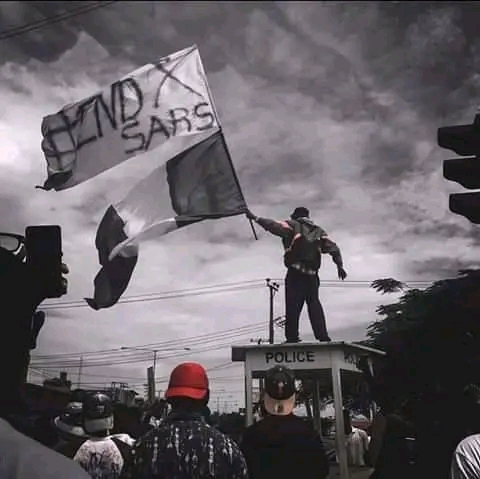

Purpose of the protest
The Nigerian police in conjunction with the sars gained high interest in the extortion and deprivation of the human rights of the youths. The youths had to take action. These were youths who are addressed as the leaders of tomorrow. Are they supposed to go through this? To fight for themselves, a protest is ensued and government called to take action.
